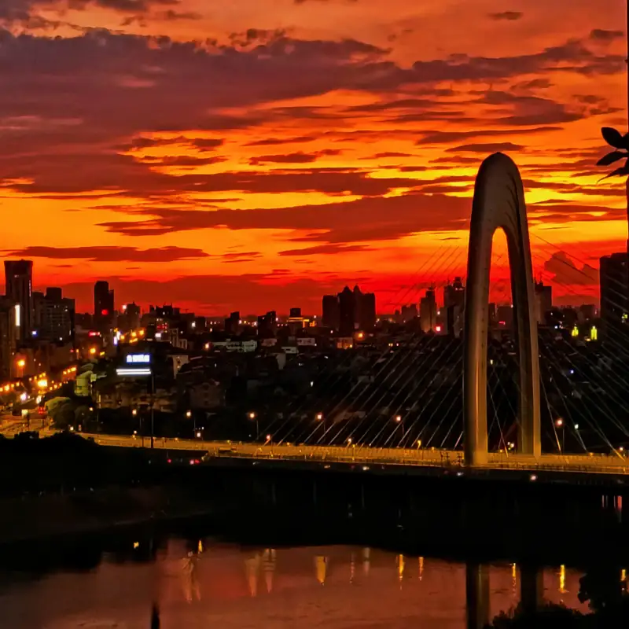

At 8 a.m. on September 6, 2022, the rebuilt Jinwu Bridge held its opening ceremony. The whole bridge opened to traffic at noon. The two banks of the Wuyi River reached another important moment of faster growth.
The bridge is a key river crossing on Binhong Road, an urban arterial in Jinhua, over the Wuyi River. The whole bridge is 265 meters long. It stands tall and impressive. Thin, strong cables hold up a clean, powerful arched main tower. Together they form a unique city skyline.
